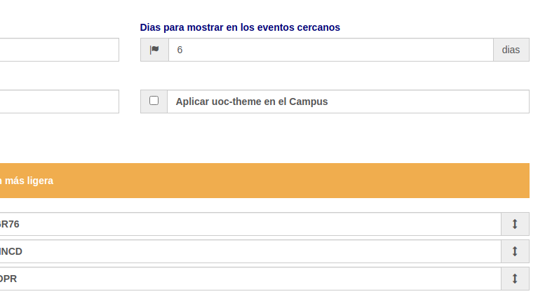

UOC Notifier
UOC Notifier
Changelog
v2.3.0
Ordenar aulas y mejoras en login
- Nueva opción para poder ordenar las aulas
- Mejora en la notificación de errores en Login

v2.2.0
Añadida opción "UOCTheme"
Nueva opción (deshabilitada por defecto) para aprovechar el espacio máximo del Campus, eliminando elementos superfluos como
Noticias, etc y ajustando el tamaño de cada aula a un ancho del 100%